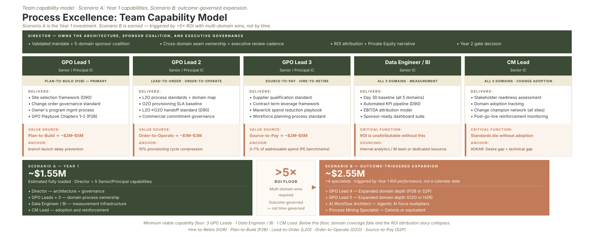

For thirty years my process work ran on one method: decompose the work, then at every step capture who supplies and receives what, the inputs, controls, outputs and mechanisms, and the time and value in each step. It worked, but only as far as I could run the interviews and draw every diagram by hand.
In 2026 I turned that method into software. Forester captures a process once, as data, and renders six standard diagrams from it, where I used to draw three by hand, and a model build that took about 8 spreadsheet hours now takes 2. I built it solo over 18 sprints from May to September, directing AI against specifications I wrote and reviewed, with an autonomous build loop taking one task at a time and a human sign-off at every stage. It has already been used on a live client engagement, which found problems no demo model had.
That is the kind of fluency I'd hire for: someone who can take the method they know by heart and turn it into something the team can run without them. It changes how big a new function needs to be.
The first question people ask about a new function is "how many people do you need?" I'd answer a different question first: what kind of team? That decision is what makes the headcount question answerable.
Philosophy
Domain experts, or capability specialists?
There are two pure ways to staff a process function, and they pull in opposite directions.
You can hire domain experts: each person a specialist in one or two of the five value chains. The strength is instant credibility with functional leaders. The weakness is that principal-level domain experts are very hard to recruit, the domains silo, and capacity shifts unevenly as priorities change quarter to quarter.
Or you can hire capability specialists: each person owns a craft (process architecture, data engineering, change management) and applies it across all five domains. The strength is that scarce skills get used everywhere. The weakness is less day-one domain credibility and more dependence on functional partners to bring the domain knowledge into the room.
For Meridian Field Services, I'd choose a hybrid on purpose. A couple of process-excellence leads would bring domain depth, with Lean Six Sigma as the core credential, while the data and change specialists would be capability roles applied across the portfolio.
Recruiting
Hire skill-first
For the process-excellence leads, the primary screen would be the craft: a Lean Six Sigma Black Belt or Master Black Belt with quantified results at scale. Domain experience would be a strong tie-breaker between otherwise comparable candidates, weighted a little heavier for the domains with the most distinctive subcultures, but it wouldn't be the gate.
The reasoning: principal-level methodology skill takes years to build, and domain knowledge can be learned through stakeholder interviews, site visits, and partnership with the people who own the work. If I filtered the recruiting pool down to domain experts, I'd slow hiring and risk lowering the skill bar the function depends on. I'd hire for the skill that's hard to find and teach the domain.
Leverage
A senior, lean team
The instinct I'd push back on hardest is the urge to staff a big function with junior analysts.
Five domains across a growing, multi-site company is a large surface area. Covered with junior people, it produces activity without leverage: lots of motion and documents, and little that changes the business. A few senior specialists, each able to act as a force multiplier across hundreds of people in the functional organizations, would produce more change.
For Meridian's first year I'd want a few process-excellence leads who run the cross-functional work, one specialist who builds the data infrastructure behind every measure, and one who owns adoption and change.

Team Capability Model: Comparing a lean, senior core team (Scenario A) with an specialized, accelerated specialist expansion (Scenario B).
Technology
An AI-native team
A lean team can cover five domains now in a way it couldn't five years ago, and the reason is AI. I'd expect every specialist on the team to bring three AI skills, because each one is part of what makes a single person a force multiplier:
1. Turn the method into a tool. Decomposing a process from a stack of interview transcripts, drafting a first-pass standard operating procedure, and running variation analysis across messy data all go faster for someone who can direct AI to build the tooling. Forester is my version of that.
2. Write standard work for the AI, too. AI tools are good at the work and forget everything between sessions. It is the tribal-knowledge problem every operation has, and I solved it for myself the way process work always has: Keystone, a private vault that every AI tool I use reads before it works, with 95 skill files, 62 purpose-built scripts, and one source of truth for the facts. On a team I'd copy the pattern into a shared repository: playbooks by role and workflow, a named owner for every file, checks on every change, and new hires and their AI tools reading the same source of truth from their first day.
3. Know when not to use the model. I build systems that depend on AI as little as possible. Code does the arithmetic, and a model gets a step only when reading or writing language is the task, after it passes a bar written down before the test. AI built Forester, and none of its 470 modules calls a model. A process function's numbers go in front of a board, so the team has to know which numbers came from tested code.
That fluency is what would let a small senior team work at a scale that used to take a department, and it's why the team design depends on it.
Co-Authorship
We author with the functional partners
Whatever the hiring philosophy, one principle would hold in every version of the model, and it decides whether the function survives.
The work is led by us and authored with the functional partners. Mapping the current state, designing the future state, removing waste, and building the standards all happen with the operational leaders who own the work. The team's job is to lead cross-functional groups made up of those leaders, and every published standard lists its functional co-authors. The leader is credited as the architect of their domain's standard, and we're credited as the facilitators and structural authors who made it rigorous and repeatable. Without that, the function fails fast no matter how skilled the team is, because people don't adopt what they feel was imposed on them.
My own closest example is the 2023 work area redesign at Verizon. I piloted it in Virginia first, then co-authored the national rollout with field supervisors, restructuring 41,326 zip codes into 521 work areas in 2.5 months with every field supervisor. The Force-to-Load capacity model that followed went through four versions in three years with the team that used it daily. At a company like Meridian, where the skilled-technician pipeline is a constraint on growth, Hire-to-Retire needs the same thing: a shared view of supply against demand that the operations leaders help build and therefore trust.
If you're scaling a team right now, are you staffing for volume or for leverage? They look similar on an org chart and produce very different results. Which way was your last hire aimed?
Next in the series: Part 5: The Playbook: Service Before Standards, on the three principles that decide whether a process function gets pulled in or routed around.
Meridian Field Services is a fictional composite. The approach draws on my own research into Process Excellence and Global Process Ownership, assisted by AI research tools, on my work at Verizon (the work area redesign and Force-to-Load capacity model, 2023-2025), and on my own AI builds (Forester and Keystone, 2026).